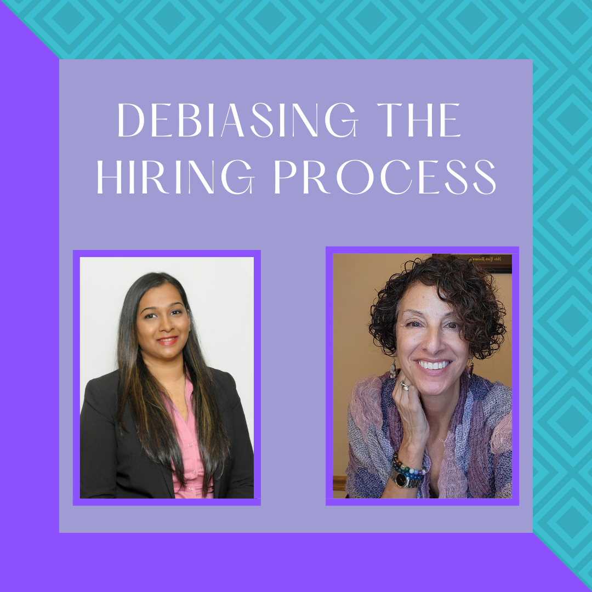
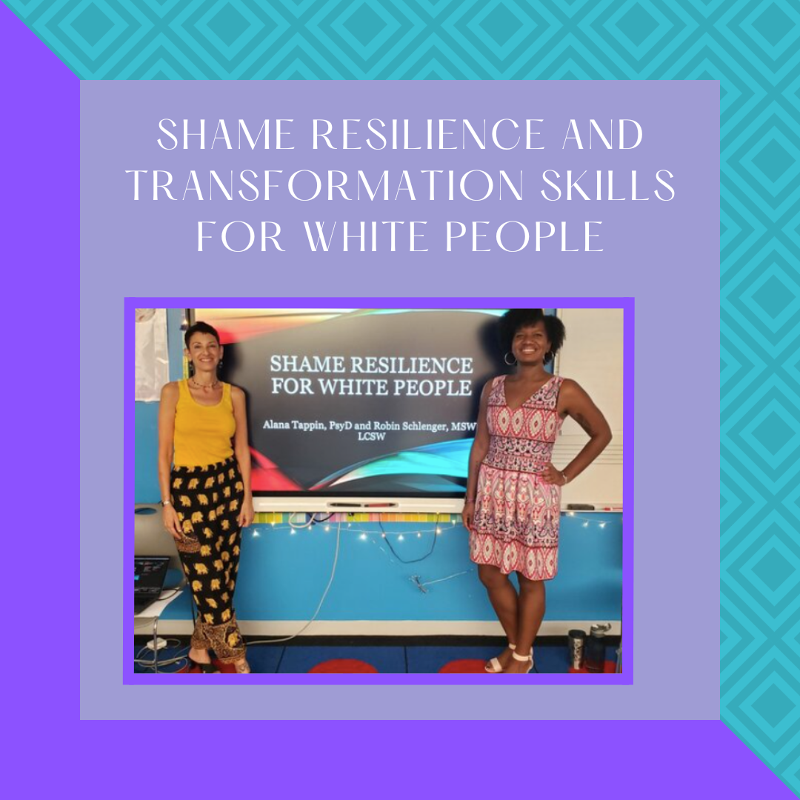
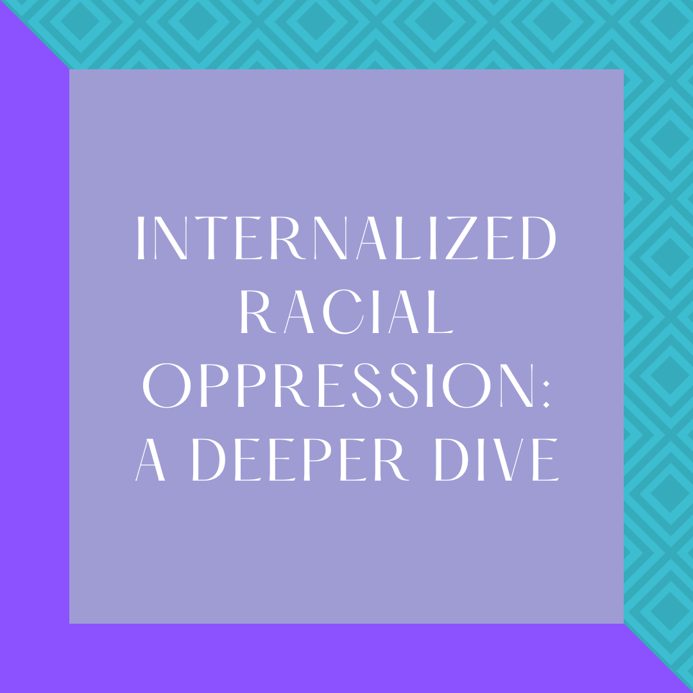
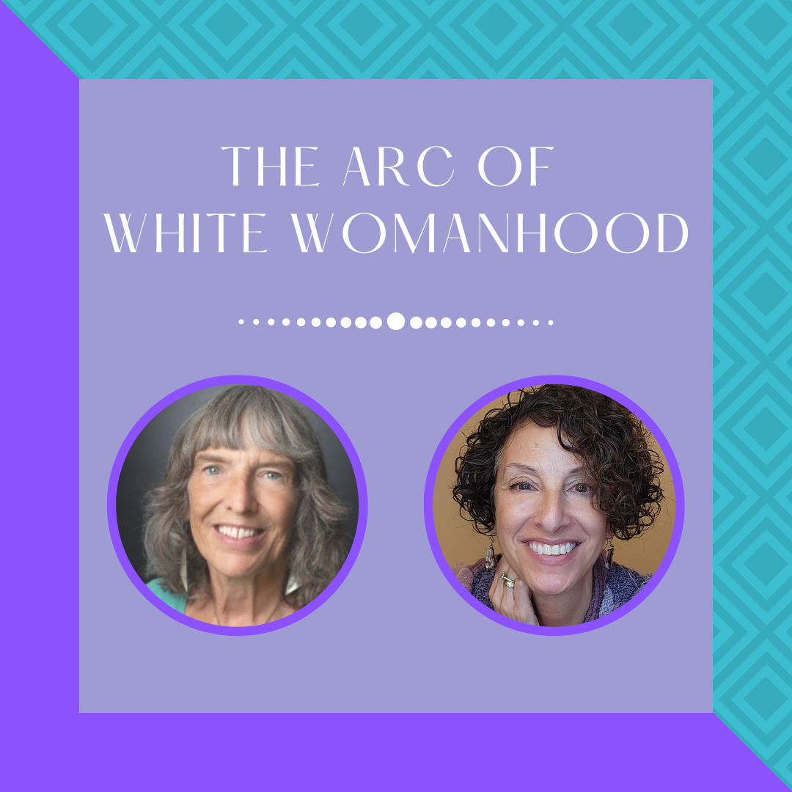
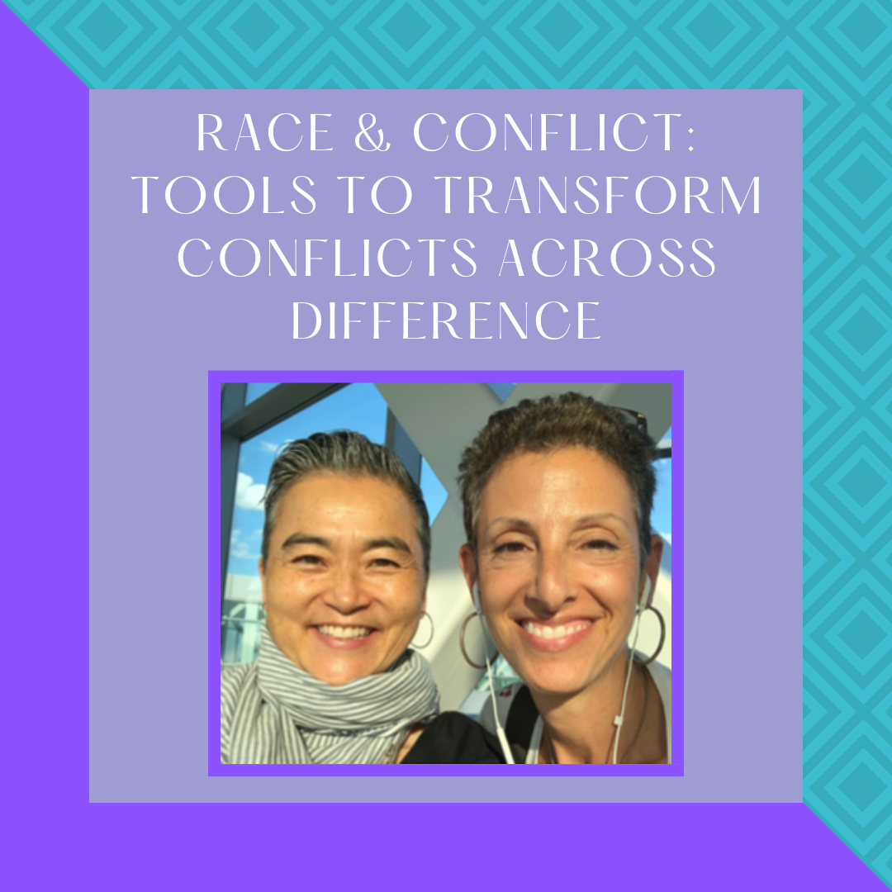
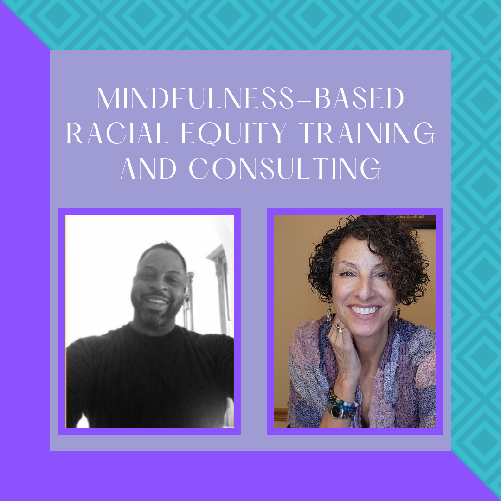
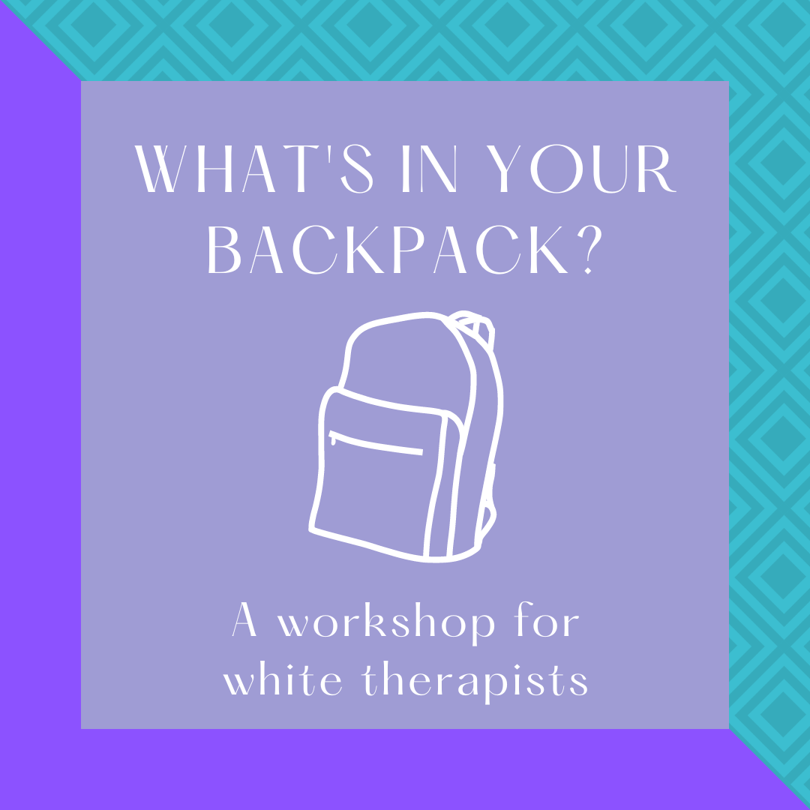

Wed, 26 Ap
WORKSHOPS + TRAININGS
Explore The Impact of Structural Racism in your Workplace and Life

DEBIASING THE HIRING PROCESS
3-hour virtual, customizable sessions
Identify the factors that impact the diversity and inclusivity of recruitment pipelines and leave with practices and strategies for creating an equitable workplace
Align the hiring process with organizational priorities


SHAME RESILIENCE AND TRANSFORMATION SKILLS FOR WHITE PEOPLE
18 hrs of customizable material
Learn shame resilience skills as a pathway to having authentic conversations about race
Develop the necessary muscle to take proactive positions in promoting racial & social justice


INTERNALIZED RACIAL OPPRESSION
6-hour workshop
Review and examine the manifestations of 4 types of racism: Individual, Interpersonal, Institutional and Ideological
Explore how IRO shows up personally and organizationally
Explore the ways in which IRS and IRI uphold white supremacist structures
Start to discuss ways to move from awareness to authentic accountability and change


THE ARC OF WHITE WOMANHOOD
Designed for people socialized as white and female, who are concerned with the intersection of white women's issues and anti-racism
Learn to challenge the ways white feminism is perpetuated by cis white women
Question how racism and patriarchal structures have obstructed a kinship between Women of Color and white women


RACE & CONFLICT: TOOLS TO TRANSFORM
CONFLICTS ACROSS DIFFERENCE
Co-faciliated conversations: 1-2 hours
Experiential training: 3-4 hours
Be introduced to skills to help transform conflicts involving race into healthy conversations
Learn creative problem-solving tools and find deeper empathy to create a sustainable culture of collaboration


MINDFULNESS-BASED RACIAL EQUITY TRAINING AND CONSULTING
Learn effective uses of mindfulness skills to cultivate an awareness of and capacity to deal with all aspects of racism
Gain knowledge about the psychology and history of racism
Develop the ability to expand your emotional threshold for discomfort so that you can build authentic multi-racial relationships


WHAT’S IN YOUR BACKPACK?:
Designed for white therapists
Build more authentic and sustainable relationships with your clients of color
Recognize and unpack racial biases, values and norms
Uncover ways in which your whiteness is influencing therapeutic processes